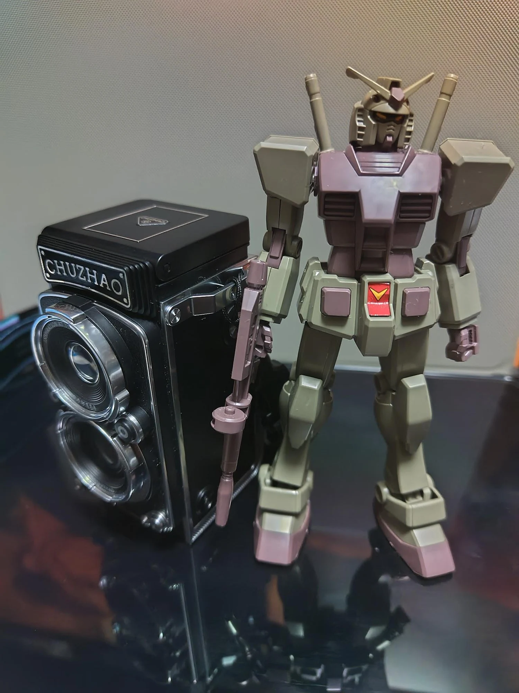
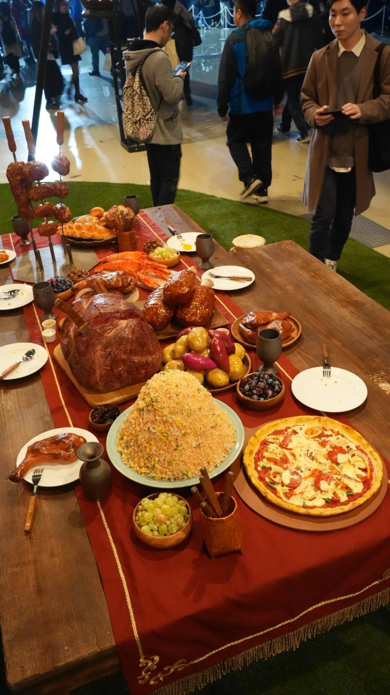
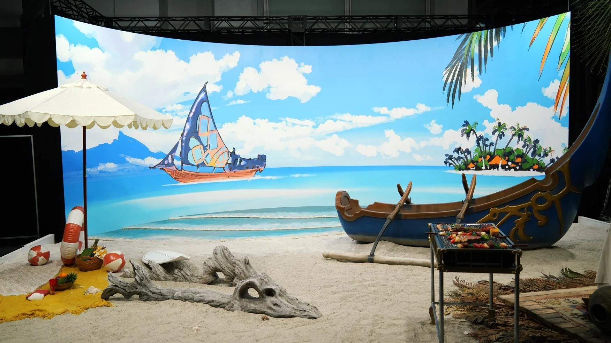

A MOMENT, THROUGH MY LENS.01 / SELECTED WORK
Through my lens.
人の表情、季節のうつろい、心に残る風景。
カメラを通して出会った瞬間を集めました。

EVERYDAY, A NEW PERSPECTIVE.02 / PROFILE
IKUNORI
NAKAGAWA.
日常の中に、
まだ知らない一枚を探して。
2025年末にフルサイズミラーレスを購入して以来、動画や撮影会を通して、撮影技術を学んでいます。仕事としての撮影実績はまだありませんが、一つひとつの撮影を大切に、表現の幅を広げています。
- SUBJECTS
- 花 / タレント / コスプレイヤー / 静物
- CAMERA
- Sony α7 V
- CONTACT
- iknr.nakagawa@gmail.com ↗
